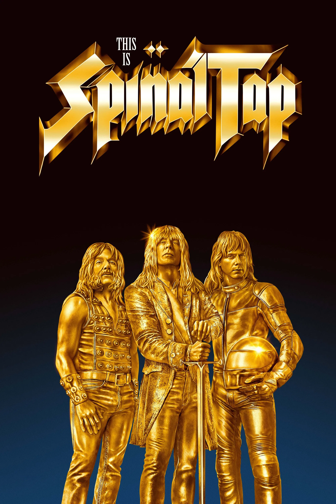

Birthdate: October 17, 1947
Nationality: American
Awards: Academy Award nomination (A Mighty Wind — co-writer)
Known For: Laverne and Shirley, Better Call Saul, A Mighty Wind
Note: Co-wrote the script and all the music with Guest and Shearer; performed the songs live on set
Birthdate: February 5, 1948
Nationality: American-British
Awards: Emmy Award, Writers Guild Award
Known For: Best in Show, A Mighty Wind, Waiting for Guffman
Note: The amp that goes to eleven was his improvised idea; the interview is one of cinema's funniest scenes
Birthdate: December 23, 1943
Nationality: American
Awards: Emmy Award (The Simpsons)
Known For: The Simpsons, Saturday Night Live
Note: The pod scene where Derek gets trapped in a prop required several painful takes to film
Birthdate: June 28, 1951
Nationality: British
Known For: V (TV series), Forbidden World
Note: Her role as David's girlfriend and the band's disruptive force was entirely improvised
Birthdate: March 6, 1947
Nationality: American
Awards: Directors Guild Award nominations
Known For: This Is Spinal Tap (director), When Harry Met Sally, A Few Good Men
Note: Directed the film and cast himself as the documentary filmmaker; a decision that added an extra layer of authenticity